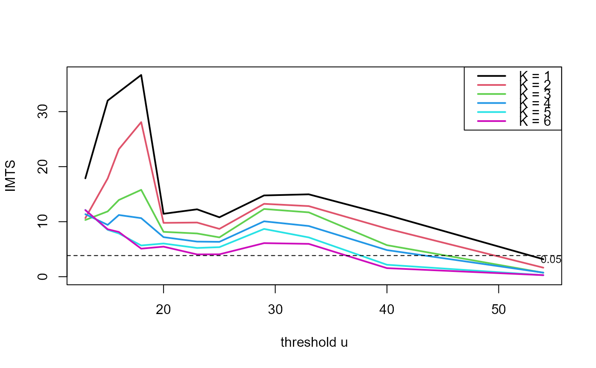
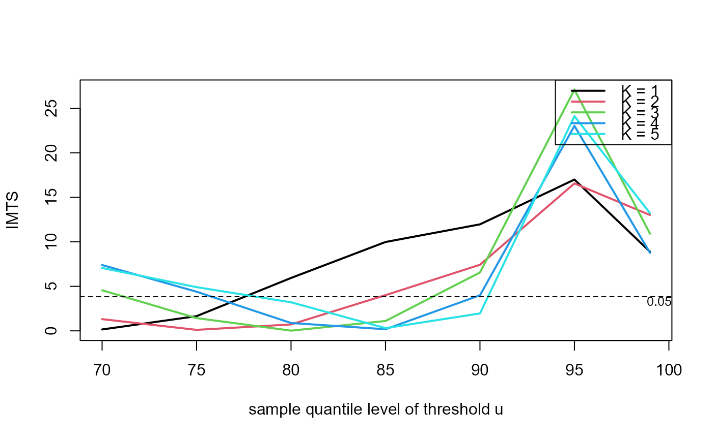
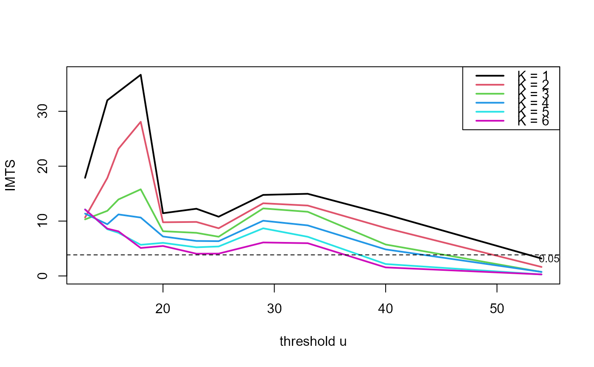
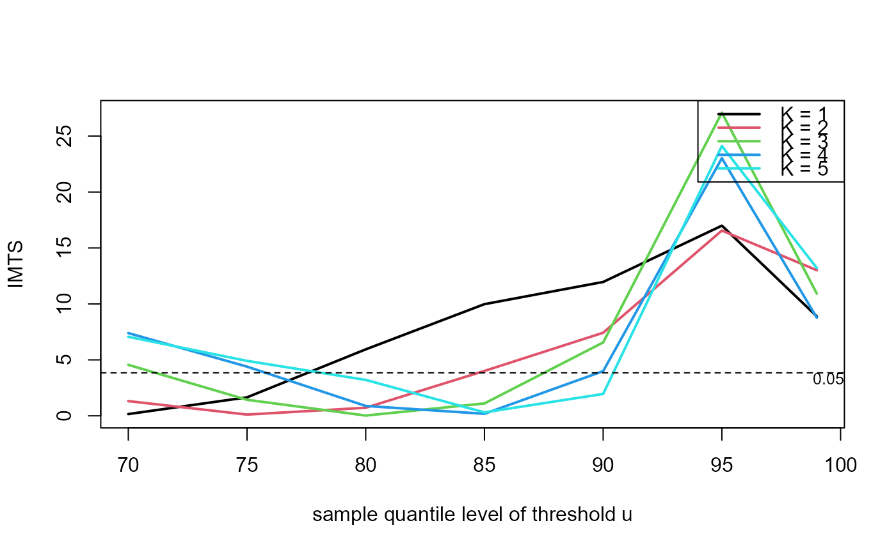

Threshold \(u\) and runs parameter \(K\) diagnostic for the \(K\)-gaps estimator
Source:R/choose_uk.R
choose_uk.RdCreates data for a plot to aid the choice of the threshold and
run parameter \(K\) for the \(K\)-gaps estimator (see
kgaps). plot.choose_uk creates the plot.
Arguments
- data
A numeric vector or numeric matrix of raw data. If
datais a matrix then the log-likelihood is constructed as the sum of (independent) contributions from different columns. A common situation is where each column relates to a different year.If
datacontains missing values thensplit_by_NAsis used to divide the data into sequences of non-missing values.- u, k
Numeric vectors.
uis a vector of extreme value thresholds applied to data.kis a vector of values of the run parameter \(K\), as defined in Suveges and Davison (2010). Seekgapsfor more details.Any values in
uthat are greater than all the observations indatawill be removed without a warning being given.- inc_cens
A logical scalar indicating whether or not to include contributions from censored inter-exceedance times, relating to the first and last observations. See Attalides (2015) for details.
Details
For each combination of threshold in u and \(K\)
in k the functions kgaps and kgaps_imt
are called in order to estimate \(\theta\) and to perform the
information matrix test of Suveges and Davison (2010).
References
Suveges, M. and Davison, A. C. (2010) Model misspecification in peaks over threshold analysis, Annals of Applied Statistics, 4(1), 203-221. doi:10.1214/09-AOAS292
Attalides, N. (2015) Threshold-based extreme value modelling, PhD thesis, University College London. https://discovery.ucl.ac.uk/1471121/1/Nicolas_Attalides_Thesis.pdf
See also
kgaps for maximum likelihood estimation of the
extremal index \(\theta\) using the \(K\)-gaps model.
kgaps_imt for the information matrix test under the
\(K\)-gaps model
plot.choose_uk to produce the diagnostic plot.
Examples
### S&P 500 index
# Multiple thresholds and run parameters
u <- quantile(sp500, probs = seq(0.1, 0.9, by = 0.1))
imt_theta <- choose_uk(sp500, u = u, k = 1:5)
plot(imt_theta)
 plot(imt_theta, uprob = TRUE)
plot(imt_theta, uprob = TRUE)
 plot(imt_theta, y = "theta")
plot(imt_theta, y = "theta")
 # One run parameter K, many thresholds u
u <- quantile(sp500, probs = seq(0.1, 0.9, by = 0.1))
imt_theta <- choose_uk(sp500, u = u, k = 1)
plot(imt_theta)
# One run parameter K, many thresholds u
u <- quantile(sp500, probs = seq(0.1, 0.9, by = 0.1))
imt_theta <- choose_uk(sp500, u = u, k = 1)
plot(imt_theta)
 plot(imt_theta, y = "theta")
plot(imt_theta, y = "theta")
 # One threshold u, many run parameters K
u <- quantile(sp500, probs = 0.9)
imt_theta <- choose_uk(sp500, u = u, k = 1:5)
plot(imt_theta)
# One threshold u, many run parameters K
u <- quantile(sp500, probs = 0.9)
imt_theta <- choose_uk(sp500, u = u, k = 1:5)
plot(imt_theta)
 plot(imt_theta, y = "theta")
plot(imt_theta, y = "theta")
 ### Newlyn sea surges
u <- quantile(newlyn, probs = seq(0.1, 0.9, by = 0.1))
imt_theta <- choose_uk(newlyn, u = u, k = 1:5)
plot(imt_theta, uprob = TRUE)
### Newlyn sea surges
u <- quantile(newlyn, probs = seq(0.1, 0.9, by = 0.1))
imt_theta <- choose_uk(newlyn, u = u, k = 1:5)
plot(imt_theta, uprob = TRUE)
 ### Cheeseboro wind gusts (a matrix containing some NAs)
probs <- c(seq(0.5, 0.95, by = 0.05), 0.99)
u <- quantile(cheeseboro, probs = probs, na.rm = TRUE)
imt_theta <- choose_uk(cheeseboro, u, k = 1:6)
plot(imt_theta, uprob = FALSE, lwd = 2)

### Uccle July temperatures
probs <- c(seq(0.7, 0.95, by = 0.05), 0.99)
u <- quantile(uccle720m, probs = probs, na.rm = TRUE)
imt_theta <- choose_uk(uccle720m, u, k = 1:5)
plot(imt_theta, uprob = TRUE, lwd = 2)

### Cheeseboro wind gusts (a matrix containing some NAs)
probs <- c(seq(0.5, 0.95, by = 0.05), 0.99)
u <- quantile(cheeseboro, probs = probs, na.rm = TRUE)
imt_theta <- choose_uk(cheeseboro, u, k = 1:6)
plot(imt_theta, uprob = FALSE, lwd = 2)

### Uccle July temperatures
probs <- c(seq(0.7, 0.95, by = 0.05), 0.99)
u <- quantile(uccle720m, probs = probs, na.rm = TRUE)
imt_theta <- choose_uk(uccle720m, u, k = 1:5)
plot(imt_theta, uprob = TRUE, lwd = 2)
